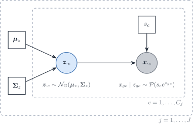
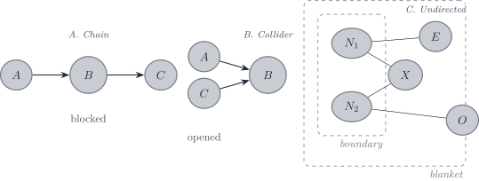

Notation (shared by all vignettes; aligned with the article)
Gene g=1,\ldots,G; cell type j=1,\ldots,J (a second type is \ell); bulk sample i=1,\ldots,N; reference donor (replicate) r=1,\ldots,R; cell c, with C_j reference cells of type j. The index i is dropped inside a derivation and restored in the model statements.
Isometric log-ratio (ILR) coordinates of \boldsymbol{p}_{\cdot i}, \boldsymbol{p}_{\cdot i}=\operatorname{softmax}(\mathbf{V}\boldsymbol{\rho}_i) with a Helmert basis \mathbf{V}
Diagonal matrix of the empirical variances of type j
\lambda
Penalty of a regularised covariance or precision estimator
\psi_g, \mathcal{D}_g
Negative binomial dispersion of gene g; deviance of gene g in a count model
\delta_{gj}
Detection rate of gene g in type j (fraction of cells with a non-zero count)
\varpi_{\ell\mid j}, \varpi_{j\ell}, \bar\varpi
MixSim overlap: probability of misclassifying a draw of j into \ell, pairwise overlap \varpi_{j\ell}=\varpi_{\ell\mid j}+\varpi_{j\mid\ell}, and its average over pairs (BarOmega)
Capture efficiency of gene g in one protocol, and the gene-wise platform ratio; \tilde{\boldsymbol{B}}=\operatorname{diag}(\tilde{\boldsymbol{b}})
\boldsymbol{D}_i
Diagonal, heteroscedastic bulk measurement noise
A tilde marks a quantity rescaled to a reference unit: per cell (\tilde{\boldsymbol{y}}, \tilde{\boldsymbol{\mu}}) or relative to the reference protocol (\tilde{\boldsymbol{b}}). \boldsymbol{\Sigma}_j couples genes within one cell type; \boldsymbol{\Gamma}_g couples cell types within one gene. A symbol absent from this table is defined in the vignette that uses it, with one meaning there.
Scope
This vignette collects the precision-network estimators and the readings of their zeros. None of them is the DeCovarT plug-in. The plug-in is the within-type covariance \boldsymbol{\Sigma}_{W,j}, and the default estimator is linear shrinkage (3.2). A sparse precision is an alternative only when the held-out Gaussian log-score of 3.2 prefers the covariance it exports. Graph scores are not used for that choice.
Sparse precision estimators
Graphical lasso with an unpenalised diagonal
On the correlation \boldsymbol{R}_j, with \boldsymbol{\Delta}_j=\operatorname{diag}(\boldsymbol{V}_j),
(Friedman et al. 2008; Mazumder and Hastie 2011). Working on \boldsymbol{R}_j puts every gene on one scale for one \lambda; rescaling leaves the zeros and the partial correlations unchanged. With the diagonal unpenalised, the fitted covariance \widehat{\boldsymbol{\Sigma}}_{R}=\widehat{\boldsymbol{\Omega}}_{R}^{-1} has unit diagonal, so the exported \widehat{\boldsymbol{\Sigma}}_j=\boldsymbol{\Delta}_j^{1/2}\widehat{\boldsymbol{\Sigma}}_{R}\boldsymbol{\Delta}_j^{1/2} keeps the sample variances exactly. On the selected edges, \hat\Sigma_{R,gg'}=R_{j,gg'}+\lambda\operatorname{sign}(\hat\omega_{gg'}) in the sign convention of Eq. 1; off them, |\hat\Sigma_{R,gg'}-R_{j,gg'}|\le\lambda.
Why glasso rather than huge:huge.glasso() always penalises the diagonal, which inflates every variance by \lambda (diagonal), whereas glasso::glasso(penalize.diagonal = FALSE) leaves it free (Zhao et al. 2012). glasso 1.11 penalises the diagonal by default, so the argument must be set.
SILGGM after the nonparanormal map
SILGGM tests the entries of a Gaussian precision with a global FDR guarantee (Zhang et al. 2018). Its input must be close to Gaussian, so the counts are first mapped to nonparanormal scores.
The map. A nonparanormal vector has monotone f_g with f_g(x_g)\sim\mathcal{N} jointly (Liu et al. 2009). By Sklar’s theorem (Sec. 3.3) the latent Gaussian copula carries the graph; the margins carry the scale. With r_{cg} the rank of x_{gc} among the C_j cells, two regularisations keep \Phi^{-1} finite:
Shrinkage is preferred. It moves each probability by at most 1/(C_j+1) and keeps every rank distinct. Truncation gives all ranks beyond \delta_{C_j} the same score; \delta_{C_j} is of order C_j^{-1/4}, fixed by the sample size rather than by the data, so it clips exactly the heavy upper tails that single-cell profiles have. Neither map helps with ties: all the zeros of a sparse gene share one score, so a gene detected in few cells carries few distinct values (Sec. 2, cause (ii)).
De-sparsified edges and the FDR support. The graphical-lasso estimate \widehat{\boldsymbol{\Omega}} of the scores is biased by the \ell_1 term: its KKT condition reads \boldsymbol{R}_j^{\mathrm{npn}}-\widehat{\boldsymbol{\Omega}}^{-1}+\lambda\widehat{\boldsymbol{Z}}=\boldsymbol{0}, with \boldsymbol{R}_j^{\mathrm{npn}} the correlation of the scores and \widehat{\boldsymbol{Z}} a subgradient of the \ell_1 norm. One Newton step on the unpenalised score removes that bias,
and \sqrt{C_j}(\check\omega_{gg'}-\omega_{gg'}) is asymptotically \mathcal{N}(0,\omega_{gg}\omega_{g'g'}+\omega_{gg'}^{2}) under sparsity and rate conditions (Jankova and Geer 2015). SILGGM (D-S_GL, global = TRUE) thresholds the resulting z-statistics by the global FDR rule of Liu (2013). \check{\boldsymbol{\Omega}} is dense and is not exported. Its role is the support.
What DeCovarT receives. The covariance on the linear scale is refit under the zeros of the support (hard selection). Two caveats follow. The refit exists only for C_j\ge\operatorname{mlt} of the support (sample-size regimes); below it a penalty is needed again and the arm loses its advantage over Sec. 1.1. And a zero partial correlation of the latent copula need not be a zero partial correlation of the linear counts, so imposing the support on the linear scale is an approximation. The held-out score of held-out score measures what that approximation costs. The tuning parameter is the FDR level \alpha.
with an \ell_1 penalty on the off-diagonal entries of \boldsymbol{\Omega}_z=\boldsymbol{\Sigma}_z^{-1} (diagonal unpenalised). The offset \log s_c is the library size of cell c over all genes. A sum over the panel would depend on the panel genes and absorb part of the type signal. The offset fixes the coefficient of \log s_c at one, so \boldsymbol{z}_{\cdot c} describes expression per unit of sequencing exposure. One model is fitted per type (and time); a single model with type dummies would share one \boldsymbol{\Sigma}_z across types.
The likelihood integrates \boldsymbol{z}_{\cdot c} and has no closed form. Variational EM maximises the evidence lower bound, \log p(\boldsymbol{x})-\operatorname{KL}\{q\,\|\,p(\boldsymbol{z}\mid\boldsymbol{x})\}, over a Gaussian family q; the KL gap is zero only if q is the true posterior. The closed-form updates of q replace a Monte Carlo E-step, which is what makes the fit practical at single-cell sizes (Chiquet et al. 2018).
Comparison on the linear scale. The latent covariance is not \boldsymbol{\Sigma}_{W,j}. With \boldsymbol{m}=\exp\{\boldsymbol{\mu}_z+\tfrac12\operatorname{diag}(\boldsymbol{\Sigma}_z)\} (elementwise), the log-normal and Poisson moments give, for one cell,
The variance of s_c adds the rank-one term \operatorname{Var}(s)\,\boldsymbol{m}\boldsymbol{m}^{\top}: depth variation correlates every pair of genes. For counts divided by their size factor, the moments are \boldsymbol{m} and \overline{s^{-1}}\operatorname{diag}(\boldsymbol{m})+(\boldsymbol{m}\boldsymbol{m}^{\top})\circ(e^{\boldsymbol{\Sigma}_z}-\mathbf{1}\mathbf{1}^{\top}). The scale must match the one used for the mean signature. These moments are what the PLN arm exports and what held-out score scores.

Figure 1: Poisson–lognormal model for one cell type. The latent log-expression \boldsymbol{z}_{\cdot c} carries the covariance \boldsymbol{\Sigma}_{z} and its precision; the counts add independent Poisson noise given \boldsymbol{z}_{\cdot c} and the size factor s_c. Covariances between genes come only from \boldsymbol{z}_{\cdot c} (and from the spread of s_c); the Poisson term adds to the diagonal only.
Statistical robustness and distributional alignment — does the fitted Gaussian (or its graph) stay put under resampling, and does it match the type-level law that DeCovarT needs?
Topological comparison — skeleton similarity among the three core estimators, without a true DAG.
Knowledge-driven scoring — TFs connected to plausible targets and pathway overlap, always as overlap with an incomplete prior.
Directed DAGs, multimodal ATAC/ChIP recovery, perturbation forecasting, and any metric that needs a known true skeleton are perspectives (?@sec-metrics-perspectives). They judge a different estimand than ?@eq-grn-estimand.
%%{init: {"theme": "sandstone"}}%%
flowchart TD
A["Estimated Omega_j"] --> B["Statistical robustness"]
A --> C["Topology (undirected)"]
A --> D["Knowledge-driven"]
B --> B1["Technical bootstrap"]
B --> B2["StARS-style instability"]
B --> B3["KL, Hellinger, eBIC"]
C --> C2["Degree, hubs, modules"]
C --> C3["Concordance among estimators"]
D --> D3["TF–target priors"]
D --> D4["Pathway overlap"]
Figure 2: Three core evaluation families for undirected cell-type GGMs. Perspectives that need a true skeleton, a DAG, extra assays, or perturbations are collected in ?@sec-metrics-perspectives.
Statistical robustness and alignment
These scores do not need a true graph. They ask whether (\widehat{\boldsymbol{\mu}}_{\cdot j},\widehat{\boldsymbol{\Sigma}}_{j}) is a stable, distinguishable plug-in for ?@eq-grn-convolution.
Resampling
With one experiment, the honest uncertainty is conditional on this atlas:
Technical cell bootstrap within type, labels fixed (?@sec-align-bootstrap). Re-estimate \boldsymbol{\Omega}_{j}; record edge inclusion frequencies (stability selection in the sense of Meinshausen and Bühlmann (Meinshausen and Bühlmann 2010)) and the Frobenius / Bures spread of \widehat{\boldsymbol{\Sigma}}_{j}.
Gene or cell downsampling as a coverage check. GRETA found that TF and gene sets can look stable while edges collapse under downsampling — a warning we should expect for glasso supports as well.
Biological (multi-organoid) bootstrap is unavailable. Reporting a bootstrap interval as if it were between-experiment uncertainty would repeat the pseudoreplication error of ?@nte-pseudoreplication.
Observation-model contamination (wrong sampling layer, spillover, missing types) is not a GRN-stability experiment. It belongs to the misspecification sweep of ?@sec-sensitivity.
Note 1: ℹ️ StARS selects \lambda from edge instability
In huge, StARS (stability approach to regularisation selection) (Liu et al. 2010) does not score likelihood or the numerical accuracy of \widehat{\boldsymbol{\Omega}}. Liu, Roeder and Wasserman choose the least amount of regularisation that still makes the graph sparse and replicable under random sampling. For each penalty \lambda, the data are subsampled, the graph is re-estimated, and \hat\pi_{gg'}(\lambda) is the fraction of subsamples in which edge \{g,g'\} appears. Edge instability is of the form
which is near zero when the edge is almost always absent or almost always present, and largest when it appears about half the time. These terms are averaged over possible edges. StARS then takes the least sparse graph whose overall instability stays below stars.thresh (huge.stars; huge.select).
Likelihood and information criteria
On the Gaussian scale actually used by the estimator,
eBIC (extended BIC) is the usual glasso selection criterion when FDR methods are not used;
held-out log-likelihood on cells left out within type (still technical, not biological).
These scores compare nested Gaussian models. They do not validate a PLN latent graph against a glasso graph on NPN data: the observation models differ. Cross-family comparison must move to a common object — the exported (\boldsymbol{\mu}_{\cdot j},\boldsymbol{\Sigma}_{j}) on the linear DeCovarT scale — and use distributional distances.
Distances between type-level Gaussians
Closed forms, for non-degenerate P_{j}=\mathcal{N}(\boldsymbol{\mu}_{\cdot j},\boldsymbol{\Sigma}_{j}):
JeffreysJ(P_{j},P_{\ell})=D_{\mathrm{KL}}(P_{j}\parallel P_{\ell})+D_{\mathrm{KL}}(P_{\ell}\parallel P_{j}) is the symmetric version used as a separation monitor in the feature chapter.
Hellinger via Gaussian affinity, and MixSim overlap\omega_{j\ell}^{\mathrm{MS}} as the sum of misclassification probabilities (Melnykov et al. 2012, 2024), are the right “can DeCovarT tell these types apart?” scores. They are not graph metrics; they are metrics on the generative object. (The superscript \mathrm{MS} avoids clashing with precision entries \omega_{gg'}.)
Bures–Wasserstein (?@sec-align-ot) is a perspective metric. It splits mean displacement from covariance geometry when an external population Gaussian is available.
Warning 2: ℹ️ Compare laws on the DeCovarT scale
KL between NPN-space Gaussians is not KL between count-scale pseudo-bulks. After each estimator has exported ?@eq-grn-export, compute KL / Hellinger / W_{2} / MixSim on that Gaussian, the one that enters the convolution. Otherwise a “better” SILGGM graph can win on NPN likelihood and lose as a deconvolution prior.
Topological comparison
These describe shape and concordance, not correctness against a true DAG. The core object is the undirected adjacency A_{gg'}=\mathbf{1}\{\hat\omega_{gg'}\neq 0\}.
degree distribution and a power-law diagnostic (many biological networks are not strictly scale-free);
hub overlap across types (rewiring of hubs is a DeCovarT-relevant summary);
clustering coefficient, number of connected components, modularity;
overlap coefficients of edge sets between the three methods (intersection over the smaller set), which avoids punishing a method for returning a larger graph.
Structural distances between two estimated undirected graphs (no true skeleton required) follow the bnlearn comparison helpers (Comparing network structures):
hamming() — Hamming distance: the number of edge additions and deletions needed to turn one skeleton into the other (no orientation term, because our graphs are undirected);
shd() — structural Hamming distance (SHD). For DAGs it also counts reversals; on undirected skeletons it reduces to the same add/delete count. Report both the raw distance and a version normalised by G(G-1)/2.
Note 3: Visualisations
The aim is to compare structure and inference, not to decorate a methods section. Each display should answer one question. Penalty-path and funkyheatmap scoreboards live in ?@sec-grn-penalty-path; this section is about supports, signs, and modules.
Supports and concordance (one type, one time)
Binary adjacency heatmaps, genes ordered by a common hierarchical clustering (from a consensus distance d_{ab}=1-\bar r_{ab} of methods, or from a biological ordering). Side-by-side heatmaps of \widehat{\boldsymbol{\Omega}}_{j} for two types make rewiring visible; a third panel of |\hat\omega^{(j)}_{gg'}-\hat\omega^{(\ell)}_{gg'}| is the differential-network view.
Upset plots of edge presence across huge, SILGGM and PLNnetwork at a fixed type \times time: how many edges are unique to one estimator, shared by two, or shared by all three.
Upset plots of edge sign, which is stricter. An edge is a signed pair \bigl(\{g,g'\},\operatorname{sign}(\hat\omega_{gg'})\bigr). Two methods can share the support and still disagree on the sign of the partial correlation; that disagreement is visible only in the signed Upset.
On-diagonal degree bars or a simple graph drawing only for a tiny TF subgraph; whole-transcriptome hairballs are not figures.
Leiden modules from the precision weights
Treat \widehat{\boldsymbol{\Omega}}_{j} as a weighted undirected graph with edge weights |\hat\omega_{gg'}| (or |\rho_{gg'\mid\mathrm{rest}}| from ?@eq-partial) on the selected support. Cluster genes with Leiden (igraph::cluster_leiden()): the weights enter the quality function directly, so modules reflect strength of conditional dependence, not just binary adjacency. Compare partitions across the three estimators (adjusted Rand index) and across types (rewiring of modules). Do not feed the dense \check{\boldsymbol{\Omega}} into Leiden.
Stability
Edge-inclusion frequencies from the technical bootstrap as a heatmap or as a reliability curve (precision among edges with inclusion >t, as t varies).
Note 4: ℹ️ When a ground truth skeleton is available
On a simulator whose GRN we supplied (?@sec-align-mc), or on a curated Boolean skeleton used only as a reference, the usual ranking scores apply to the undirected adjacency:
Score
Definition on skeletons
Caveat
Precision / recall / F_{1} or F_{0.1}
TP, FP, FN against the reference skeleton
Needs a true or curated support; GRETA weights precision 10\times recall because inferred GRNs are sparse
Early precision
Precision among the top-k edges
Robust when k is the expected degree \times G/2
AUPRC / AUROC
Ranking of edges
AUROC is too optimistic on sparse graphs; prefer AUPRC
Structural Hamming distance
Hamming / SHD against the true skeleton
Scale with G; report also normalised SHD
Using a Boolean model (BEELINE curated networks; BoolODE) as the prior and a GGM as the data-driven proposal is a legitimate consistency check; using the Boolean model as\boldsymbol{\Omega}_{j} would abandon the Gaussian convolution.
Knowledge-driven scoring
Literature / knowledge (observational, undirected)
Marker TFs: is a known type marker present as a hub, or as a high-degree node in \widehat{\boldsymbol{\Omega}}_{j} for that type?
TF–target edges: if g is a TF and g' a curated target, does the undirected edge \{g,g'\} appear? Resources: CollecTRI, DoRothEA, and mouse TF catalogues — all incomplete.
TF–TF via shared targets: two TFs that share many neighbours may reflect a complex or an artefact of co-expression; report overlap with PPI / IntAct only as a soft score.
Predictive (observational)
How well does the graph topology predict held-out expression (gene \sim neighbours)? For a GGM this is almost circular (the model is a prediction of each node given the rest), but a held-out cell nodewise R^{2} is still a useful calibration: a graph that does not predict expression of its own nodes is a bad Gaussian.
Gene-set enrichment of Leiden or other modules (Hallmark, KEGG, Reactome) is a sanity check, not a causal test.
Orthogonal multi-modal multi-omic assays
ChIP-seq, CUT&RUN, and ATAC-seq (or multiome) networks are closer to physical interaction than a partial correlation. They are orthogonal, complementary modalities; they are not measured in the core Suppinger scRNA-seq table we use for \boldsymbol{\Omega}_{j}. If a later gastruloid multiome appears, GRETA is a possible evaluation harness; SCENIC+ / CellOracle / Dictys remain out of the DeCovarT input, because they return directed regulons, not SPD precisions. The honest use is: project our undirected skeleton onto TF–CRE–gene triples and score literature overlap; do not replace \boldsymbol{\Omega}_{j} with a regulon adjacency.
Perturbation and interventional datasets
CORNETO(rodriguez-mierUnifyingMultisampleNetwork2025?) reformulates knowledge-driven network inference as a joint constrained optimisation problem (LP / MILP) over prior knowledge networks. It is not a GGM. As a perspective scorer, it can take our data-driven support and ask whether a sparse subnetwork of a PKN explains the omics under flow / Steiner / CARNIVAL constraints. That tests mechanistic plausibility, not Gaussian fit.
Why near-diagonal precisions appear
On Suppinger, an earlier pipeline (huge, EBIC) returned mostly diagonal \widehat{\boldsymbol{\Omega}}_j. Five causes compete with “no dependence”, and the first three are checkable.
(i) Pipeline fallbacks. A gene constant within a type made the earlier script return a diagonal covariance for the whole type; failed solves were replaced by a diagonal that EBIC could select; and EBIC mixed a correlation-scale fit with a covariance-scale likelihood. These are fixed in the reproducibility code, and the presence gate of the feature-selection chapter (presence) prevents the first upstream.
(ii) A transformation that ignores the count law. Rank scores give all zeros of a sparse gene one tied value, and standardising by the marginal variance treats a Poisson-dominated gene and an overdispersed gene alike. Both flatten correlations before any penalty acts (Wu et al. 2020 warn against a naive nonparanormal map on counts).
(iii) A panel built against within-type covariance. Genes chosen for a large between- to within-type ratio have small within-type variance, where sampling noise dominates. Such a panel removes the covariance DeCovarT is meant to model (selection effect). If the discriminative genes are close to conditionally independent within each type, the covariance adds little to the mean signature, which is itself a result.
For any \lambda, the graphical lasso on \boldsymbol{R}_j returns a diagonal \widehat{\boldsymbol{\Omega}} exactly when \max_{g\neq g'}|R_{j,gg'}|\le\lambda, with or without a penalised diagonal (Mazumder and Hastie 2011): “A large enough penalty level produces an empty graph” (Chiquet 2015, 39). Two orders of magnitude make that likely on single-cell data.
Noise level. Under independence the largest of the G(G-1)/2 sample correlations is about \sqrt{4\log G/C_j}, that is 0.35 for G=500 and C_j=200. A penalty that controls false edges sits near that level.
EBIC cost per edge. With \gamma=0.5, EBIC charges \log C_j+4\gamma\log G\approx17.7 per edge at the same sizes. One edge of partial correlation \rho raises twice the log-likelihood by about C_j\rho^{2}, so only |\rho|\gtrsim0.30 survives.
Neighbourhood selection behaves the same way: its finite-sample penalty sets every coefficient to zero when all |r_{gg'}|\le\tilde\Phi^{-1}\{\alpha/(2G^{2})\}/\sqrt{C_j}, about 0.55 for G=1000, C_j=100 and \alpha=0.05 (Meinshausen & Bühlmann 2006, eq. 9), and partial correlations below order C_j^{-(1-\xi)/2} are not detected (assumption 5). A diagonal estimate says that no partial correlation is large relative to \sqrt{\log G/C_j}, not that the partial correlations are zero. The covariance plug-in avoids the threshold: shrinkage keeps every correlation, damped by 1-\lambda.
Measurement attenuation on counts
On UMI counts the observed covariance is the latent covariance plus a diagonal sampling term (Eq. 5). Every correlation is attenuated, most for lowly expressed genes (Sarkar and Stephens 2021; Chiquet et al. 2021), which pushes \max|R_{j,gg'}| under the threshold of Sec. 2.1. For two genes with latent correlation 0.6, latent variances 1 and e^{\mu_z}=0.5 at s_c=1, Eq. 5 gives a mean count of 0.82 and a linear-scale correlation of about 0.28. The chunk below checks that value by simulation.
The Poisson term is a property of the measurement, not of the cells. Modelling it (PLNnetwork, Sec. 1.3) is the principled correction; a smaller penalty is not.
Perspectives
Note 5: Graphical independence models
Directed and undirected separation
Glasso returns an undirected graph. Growing a gene panel by neighbours is therefore not the same operation as blocking paths on a DAG.
On a DAG, d-separation uses the direction of edges. A chain is blocked by conditioning on the middle node; a collider is opened by conditioning on the collision node (or on one of its descendants). On an undirected graph, u-separation ignores direction: a path is blocked when it meets the conditioning set. Figure 3 draws both.

Figure 3: Directed d-separation (chain blocked, collider opened), undirected u-separation on a minimal I-map, and the nesting of a Markov boundary inside a Markov blanket.
Blanket versus boundary
A Markov blanket of a variable X is any set S that renders X conditionally independent of the remaining variables (Pearl 1988). The neighbours of X in some undirected graph that is an I-map are always a blanket, but that graph may contain redundant edges, so the neighbour set need not be minimal.
A Markov boundary is a minimal Markov blanket. For a positive distribution, that boundary is unique and equals the neighbour set of X in the minimal undirected I-map(Pearl 1988; Koller and Friedman 2009). The boundary is therefore the lower bound on the size of a blanket: every blanket contains a boundary, and the boundary is the smallest one (Figure 3, panel C).
Other generative and inferential models
Copulas with GAMLSS margins.scDesign3 fits each gene by a generalised additive model for location, scale and shape (GAMLSS), for example a negative binomial whose mean and dispersion depend on the type with the library size as offset, and joins the genes by a copula (Song et al. 2024). A GAMLSS relaxes the exponential family and models every distribution parameter, but assumes independent observations (Stasinopoulos & Rigby 2007, p. 2), so dependence needs the copula. By Sklar’s theorem F(\boldsymbol{x})=C\{F_1(x_1),\ldots,F_G(x_G)\}, with C unique when the margins are continuous; for counts it is unique only on the ranges of the margins, so scDesign2/scDesign3 randomise the quantile, u_{gc}=(1-v_{gc})F_{gc}(x_{gc}-1)+v_{gc}F_{gc}(x_{gc}) with v_{gc}\sim\mathcal{U}(0,1) (Sun et al. 2021). The likelihood splits into a marginal and a copula part, so the two can be selected separately. The copula correlation is not \boldsymbol{\Sigma}_{W,j}: linear-scale moments of a copula model need Monte Carlo or a moment map like Eq. 5. The empirical Gaussian copula is singular when C_j<G; a sparse precision or a vine copula is then needed.
Factor and sparse-plus-low-rank models. A few unmeasured programmes make the marginal precision dense. Writing \boldsymbol{\Omega}_{\mathrm{marg}}=\boldsymbol{\Omega}_{\mathrm{sparse}}-\boldsymbol{L}, \boldsymbol{L}\succeq0 of low rank (Chandrasekaran et al. 2012), or a factor-plus-diagonal covariance, gives a dense plug-in with few parameters. Depth variation is one such rank-one factor (Eq. 6).
Other estimators of the same Gaussian graph. Neighbourhood selection regresses each gene on the others, \theta^{g}_{g'}=-\omega_{gg'}/\omega_{gg}, and combines neighbourhoods by an AND or an OR rule; it is parallel, needs d\log G cells, but gives a support, not a precision. SPACE makes the regressions joint and recovers hubs better (Peng et al. 2009). CLIME needs no irrepresentability condition (Chiquet 2015, 42). The D-trace loss \tfrac12\langle\boldsymbol{\Omega}^{2},\boldsymbol{V}_j\rangle-\operatorname{tr}\boldsymbol{\Omega} has a weaker irrepresentability condition than the graphical lasso in Zhang and Zou’s AR examples (Zhang and Zou 2014). A graphical horseshoe replaces the penalty path by global–local shrinkage (Li et al. 2019). These change the bias and the assumptions, not the detection limit of Sec. 2.1.
Matrix-variate models.GmGM models dependence between genes and between cells through a Kronecker sum of two precisions; the sum cannot separate regulation inside a cell from dependence across cells (Andrew et al. 2026).
Algorithm unrolling. Iterative sparse-precision solvers become trainable layers (Monga et al. 2021; GLAD); PLN-Tree adds a tree of modules to the PLN (Chaussard et al. 2024).
Directed Gaussian networks
Gaussian Bayesian networks orient edges under Markov and faithfulness assumptions; interventions (Perturb-seq and related CRISPR screens) supply the environments needed for causal claims (Peters et al. 2016; Svinin and Glaab (2025)). Any of them can generate a \boldsymbol{\Sigma}_j for DeCovarT.
Note 6: From a linear Gaussian Bayesian network to a joint normal
Order the G genes along a DAG. A linear Gaussian Bayesian network writes
with \Lambda_{gg'}=0 unless g' is a parent of g. In matrix form (\mathbf{I}_G-\boldsymbol{\Lambda})\boldsymbol{x}=\boldsymbol{\mu}+\boldsymbol{\varepsilon} with \boldsymbol{\Lambda} strictly triangular and \boldsymbol{Q}=\operatorname{diag}(q_1,\ldots,q_G), so
The precision has an edge between two parents of a common child (moralisation), so a sparse DAG can give a denser \boldsymbol{\Omega}. bnlearn::gbn2mvnorm() returns (\boldsymbol{\mu},\boldsymbol{\Sigma}) from a fitted network (Scutari 2026). A DAG ground truth can therefore populate type-specific \boldsymbol{\Sigma}_j in simulations before the bulk convolution. The dynamic counterpart is the Lyapunov covariance of diagonal, whose precision need not follow the edges of \boldsymbol{A}.
Joint and shared-topology estimation across types
Rare types have few cells, and estimating each covariance alone wastes the structure they share with abundant types. A topology shared across types and refined per type is the natural scheme. The families differ in what they share.
Shrunk covariances. The intertwined lasso fits each type on \alpha\boldsymbol{V}_j+(1-\alpha)\bar{\boldsymbol{V}}, with \bar{\boldsymbol{V}} the cell-weighted pooled covariance (Chiquet et al. 2011; Chiquet 2015, 49–50).
Shared support, free weights. The group graphical lasso (Danaher et al. 2012) and the cooperative lasso (Chiquet et al. 2011, 2012) share edges across types. The cooperative lasso assumes sign coherence: an edge may change magnitude but not sign between types, because “sign swaps are very unlikely” (Chiquet 2015, 51).
Shared weights. The fused graphical lasso penalises |\omega^{(j)}_{gg'}-\omega^{(\ell)}_{gg'}|(Danaher et al. 2012); PLNFGL puts a Poisson–lognormal layer under it (Zhai et al. 2026).
Block priors. SIMoNe penalises edges within modules less than edges between modules, with modules from a stochastic block model learnt by variational EM (Chiquet et al. 2009; Holland et al. (1983)).
The difference itself. A D-trace loss on \boldsymbol{\Omega}_1-\boldsymbol{\Omega}_2 estimates the rewiring without either network, and only the difference must be sparse (Yuan et al. 2017; Plaksienko et al. 2025).
Sign-coherent penalties are preferred. The joint graphical lasso weights each type’s log-likelihood by its cell count C_j, and the intertwined lasso pools covariances with the same weights. With one dominant population, a shared or fused penalty then lets the abundant type erase edges that only the rare types carry, and pulls the rare-type weights towards the dominant network. The argument concerns losses weighted by C_j; the single-precision D-trace loss of Zhang and Zou (2014) has no such weighting, and its differential extension targets the difference rather than a shared network. DeCovarT also separates types partly through their covariance differences, which fusion shrinks. A shared support with sign coherence keeps the magnitudes free. Whatever the penalty, check by the nested score of held-out score, per type, that the rare types do not lose held-out likelihood. Separate fits, as in the current pipeline, need one penalty per type: a common \lambda is sensible only for samples “of similar sizes” (Chiquet 2015, 49).
References
Chiquet, Julien. 2015. ‘Contributions to Sparse Methods for Complex Data Analysis’. PhD thesis, Université Paris-Saclay / AgroParisTech.
Chiquet, Julien, Yves Grandvalet, and Christophe Ambroise. 2011. ‘Inferring Multiple Graphical Structures’. Statistics and Computing 21 (4): 537. https://doi.org/10.1007/s11222-010-9191-2.
Chiquet, Julien, Yves Grandvalet, and Camille Charbonnier. 2012. ‘Sparsity with Sign-Coherent Groups of Variables via the Cooperative-Lasso’. The Annals of Applied Statistics 6. https://doi.org/10.1214/11-aoas520.
Chiquet, Julien, Mahendra Mariadassou, and Stéphane Robin. 2018. Variational Inference for Sparse Network Reconstruction from Count Data. arXiv. https://doi.org/10.48550/arxiv.1806.03120.
Chiquet, Julien, Mahendra Mariadassou, and Stéphane Robin. 2021. ‘The Poisson-Lognormal Model as a Versatile Framework for the Joint Analysis of Species Abundances’. Frontiers in Ecology and Evolution 9. https://doi.org/10.3389/fevo.2021.588292.
Danaher, Patrick, Pei Wang, and Daniela M. Witten. 2012. The Joint Graphical Lasso for Inverse Covariance Estimation Across Multiple Classes. arXiv:1111.0324. arXiv. https://doi.org/10.48550/arxiv.1111.0324.
Friedman, Jerome, Trevor Hastie, and Robert Tibshirani. 2008. ‘Sparse Inverse Covariance Estimation with the Graphical Lasso’. Biostatistics (Oxford, England) 9. https://doi.org/10.1093/biostatistics/kxm045.
Jankova, Jana, and Sara van de Geer. 2015. ‘Confidence Intervals for High-Dimensional Inverse Covariance Estimation’. Electronic Journal of Statistics 9 (1). https://doi.org/10.1214/15-ejs1031.
Koller, Daphne, and Nir Friedman. 2009. Probabilistic Graphical Models: Principles and Techniques. MIT Press.
Li, Yunfan, Bruce A. Craig, and Anindya Bhadra. 2019. The Graphical Horseshoe Estimator for Inverse Covariance Matrices. arXiv:1707.06661. arXiv. https://doi.org/10.48550/arxiv.1707.06661.
Liu, Han, John Lafferty, and Larry Wasserman. 2009. ‘The Nonparanormal: Semiparametric Estimation of High Dimensional Undirected Graphs’. Journal of Machine Learning Research 10 (80): 2295–328.
Liu, Han, Kathryn Roeder, and Larry Wasserman. 2010. ‘Stability Approach to Regularization Selection (StARS) for High Dimensional Graphical Models’. Advances in Neural Information Processing Systems 24 (2): 1432–40.
Mazumder, Rahul, and Trevor Hastie. 2011. ‘The Graphical Lasso: New Insights and Alternatives’. Electronic Journal of Statistics 6. https://doi.org/10.1214/12-ejs740.
Meinshausen, Nicolai, and Peter Bühlmann. 2010. ‘Stability Selection’. Journal of the Royal Statistical Society. Series B (Statistical Methodology) 72: 417–73. https://doi.org/10.1111/j.1467-9868.2010.00740.x.
Melnykov, Volodymyr, Wei-Chen Chen, and Ranjan Maitra. 2012. ‘MixSim: An R Package for Simulating Data to Study Performance of Clustering Algorithms’. Journal of Statistical Software 51. https://doi.org/10.18637/jss.v051.i12.
Melnykov, Volodymyr, Wei-Chen Chen, and Ranjan Maitra. 2024. MixSim: Simulating Data to Study Performance of Clustering Algorithms.
Pearl, Judea. 1988. Probabilistic Reasoning in Intelligent Systems: Networks of Plausible Inference. Morgan Kaufmann.
Peng, Jie, Pei Wang, Nengfeng Zhou, and Ji Zhu. 2009. ‘Partial Correlation Estimation by Joint Sparse Regression Models’. Journal of the American Statistical Association 104 (486): 735–46. https://doi.org/10.1198/jasa.2009.0126.
Plaksienko, Anna, Magne Thoresen, and Vera Djordjilović. 2025. Methods for Differential Network Estimation: An Empirical Comparison. arXiv:2412.17922. arXiv. https://doi.org/10.48550/arxiv.2412.17922.
Sarkar, Abhishek, and Matthew Stephens. 2021. ‘Separating Measurement and Expression Models Clarifies Confusion in Single-Cell RNA Sequencing Analysis’. Nature Genetics 53 (6): 770–77. https://doi.org/10.1038/s41588-021-00873-4.
Song, Dongyuan, Qingyang Wang, Guanao Yan, Tianyang Liu, Tianyi Sun, and Jingyi Jessica Li. 2024. ‘scDesign3 Generates Realistic in Silico Data for Multimodal Single-Cell and Spatial Omics’. Nature Biotechnology 42 (2): 247–52. https://doi.org/10.1038/s41587-023-01772-1.
Svinin, Gleb, and Enrico Glaab. 2025. ‘Causal Network Analysis of Omics Data Using Prior Knowledge Databases’. Briefings in Bioinformatics 26. https://doi.org/10.1093/bib/bbaf654.
Yuan, Huili, Ruibin Xi, Chong Chen, and Minghua Deng. 2017. Differential Network Analysis via the Lasso Penalized D-Trace Loss. arXiv:1511.09188. arXiv. https://doi.org/10.48550/arxiv.1511.09188.
Zhai, Wenli, Dan Zhou, Zhongshang Yuan, and Jiadong Ji. 2026. ‘PLNFGL: Joint Estimation of Multi-Condition Gene Networks from Single-Cell RNA-seq Data’. Bioinformatics 42 (7): btag485. https://doi.org/10.1093/bioinformatics/btag485.
Zhang, Rong, Zhao Ren, and Wei Chen. 2018. ‘SILGGM: An Extensive R Package for Efficient Statistical Inference in Large-Scale Gene Networks’. PLOS Computational Biology 14. https://doi.org/10.1371/journal.pcbi.1006369.
Zhang, Teng, and Hui Zou. 2014. ‘Sparse Precision Matrix Estimation via Lasso Penalized D-trace Loss’. Biometrika 101 (1): 103–20.
Zhao, Tuo, Han Liu, Kathryn Roeder, John Lafferty, and Larry Wasserman. 2012. ‘The Huge Package for High-dimensional Undirected Graph Estimation in R’. Journal of Machine Learning Research 13 (37): 1059–62. https://jmlr.org/papers/v13/zhao12a.html.